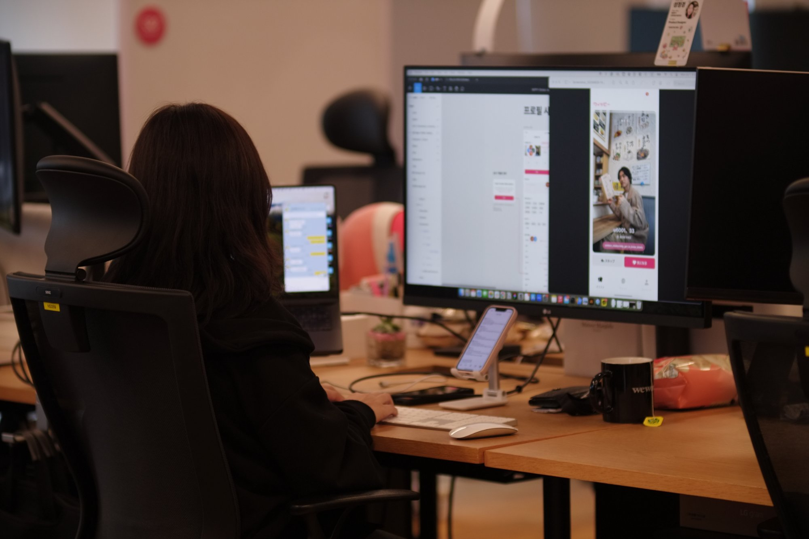
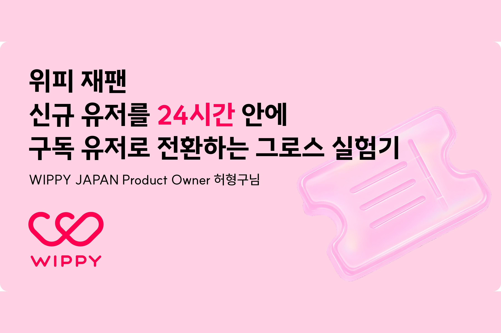
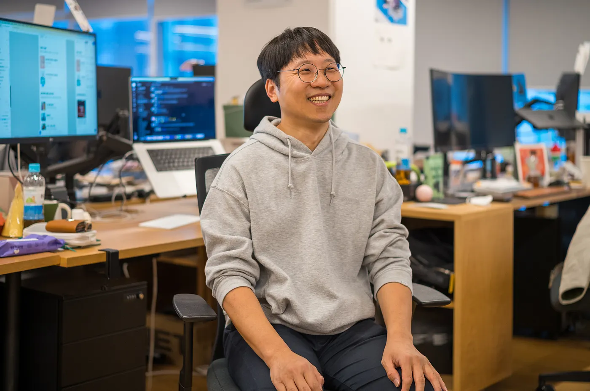
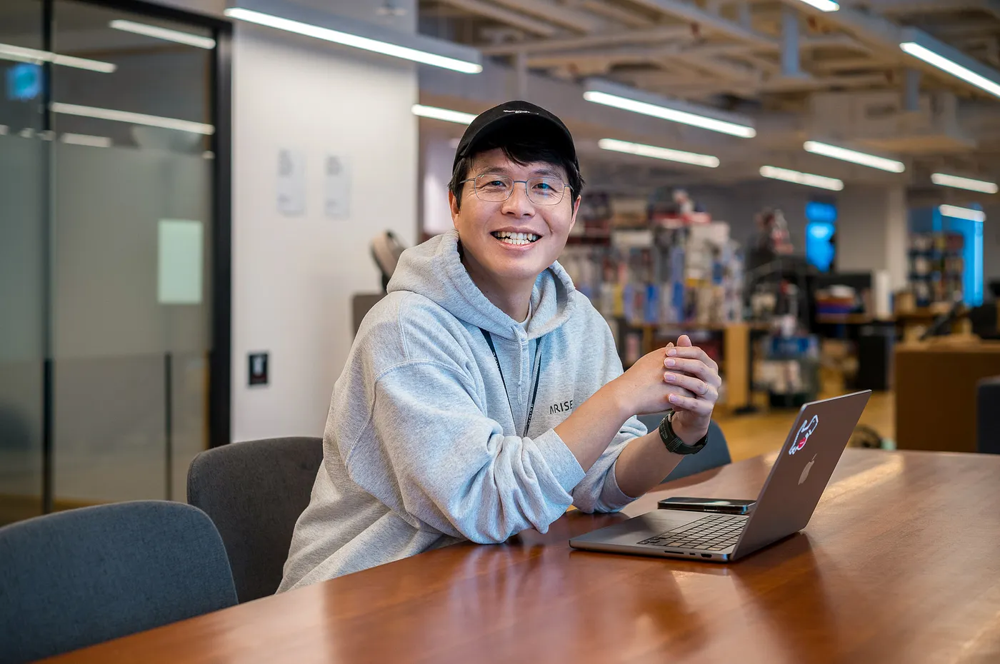
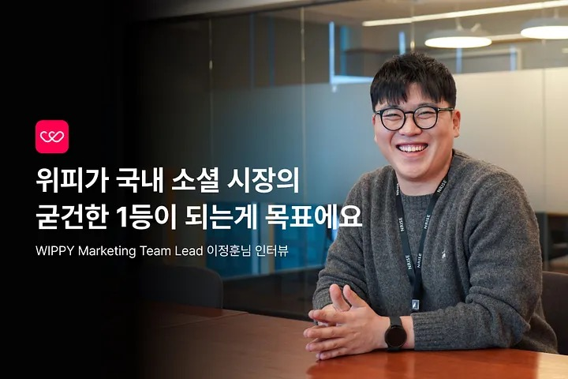
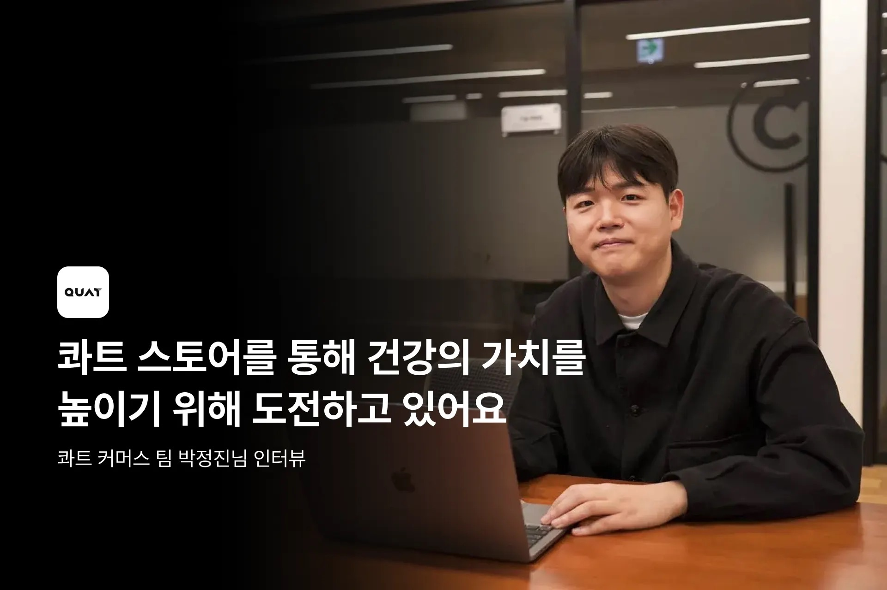
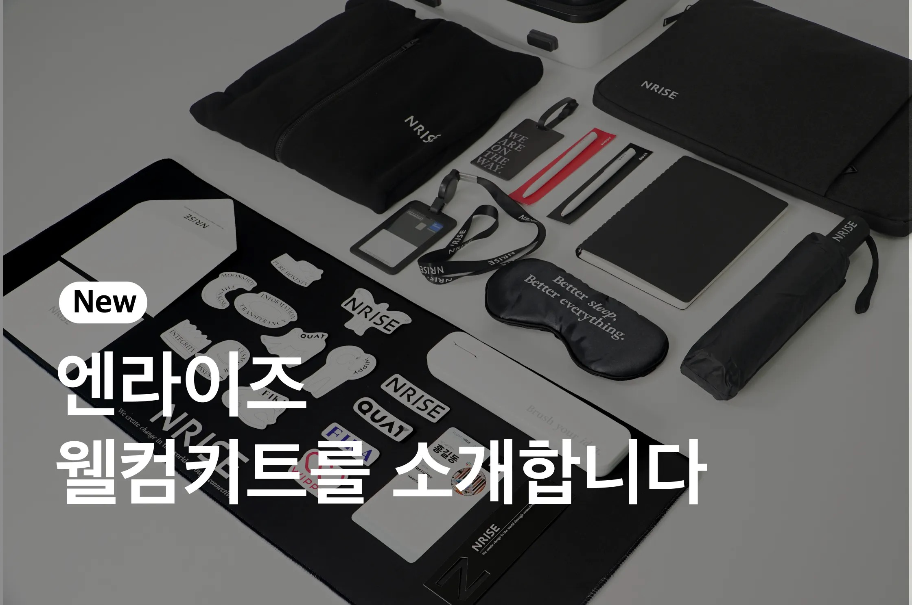

Mission
Core Values
신뢰 위에서 원팀으로 움직이고, 존중이 담긴 극도의 솔직함으로 소통합니다.
신뢰는 가장 단단한 기반
팀워크는 동료의 신뢰를 얻는 것부터 형성됩니다. 신뢰는 단순히 믿는다는 마음만으로 생겨나지 않습니다. 동료에게 신뢰를 얻기 위해 행동을 통해 증명하는 과정에서 비로소 발현될 수 있습니다.
원팀(One-Team)
엔라이즈에서는 나의 성공보다 팀의 성공을 절대적으로 우선시합니다. '내 일'과 '네 일' 역할을 나누는 경계를 지우고, 팀에 필요한 일이라면 무엇이든 주도적으로 나섭니다. 서로를 이끌어주고 먼저 손 내미는 One-Team 정신이 우리를 위대한 성과로 이끕니다.
존중이 담긴 극도의 솔직함
갈등이 두려워 침묵하거나, 모호하게 에둘러 말하는 표현을 경계합니다. 엔라이즈가 추구하는 솔직함은 '존중' 위에서 성립합니다. 다름을 포용하고 문제를 정면으로 마주하여 명확하게 소통하는 용기, 그리고 즉각적으로 피드백을 주고받는 끈끈함이 진정한 솔직함을 완성합니다.
팀워크가 탄탄해야 빠르고 혁신적인 결과를 만들 수 있거든요. 그렇게 엔라이즈는 '함께' 소통하고 부딪히며 성장하는 것을 목표로 달립니다.
책임감 위에서 자율적으로 판단하고, 맥락을 투명하게 공유하며, 결정 후 빠르게 실행합니다.
책임이 따르는 자율성
담당한 업무에 대해 책임감을 갖고 자율적으로 판단하고 결정합니다. 엔라이즈가 추구하는 자율성은 단순한 편의나 복지가 아닙니다. 진정한 자율성은 팀과 제품의 성공에 대한 책임감, 그리고 동료와의 탄탄한 공감대 위에서 온전히 발휘될 수 있습니다.
맥락의 투명한 공유
자율적으로 일을 하기 위해서는 공유가 중요합니다. 엔라이즈가 표현하는 '공유'는 표면적인 현상뿐만 아니라, 이면의 변화와 맥락까지 투명하게 나누는 것을 의미합니다. 투명한 공유는 동료의 공감과 조력을 이끌어내어 자율적인 의사결정을 가능케 합니다.
결정 이후의 수용과 빠른 실행
충분히 논의했음에도 결론이 나지 않는다면, 빠르게 나아가기 위해 담당자가 결정을 내립니다. 내 의견과 다르더라도, 그 결정을 전적으로 수용하여 가장 빠르게 실행하는 데 집중합니다.
결국 위임이라는 것은 결정권을 주는 거예요. 스스로 자유롭게 결정할 수 있는 권리는 동료를 설득하고 일을 끝까지 완수해 나가는 데 중요한 동력이 되거든요. 자율과 책임의 상호작용이죠.
겉과 속이 일치하는 일관성을 지키고, 결과와 과정 모두에서 떳떳하게 행동합니다.
겉과 속이 일치하는 일관성
상황에 따라 변하는 자세를 경계합니다. 엔라이즈는 단순히 거짓말을 하지 않는 것을 넘어, 겉과 속이 다름없이 스스로 옳다고 믿는 윤리적 기준을 매 순간 일관되게 실천합니다.
결과와 과정 사이의 떳떳함
아무도 보지 않는 곳에서도, 스스로에게 부끄럽지 않은 올바른 결정을 내립니다. 모든 의도와 과정, 그리고 결과에 대해 숨기거나 포장하지 않고 동료들 앞에서 온전히 떳떳하게 말하고 행동합니다.
진심이 중요합니다. 우리가 일, 동료, 고객을 대할 때 앞과 뒤가 다르지 않을 때 비로소 성과를 낼 수 있다고 생각해요.
모든 고민과 결정은 '고객에게 진정으로 훌륭한 가치를 제공하고 있는가'에서 출발합니다.
고객 집착의 기준
제품이 존재하는 이유이자 달성해야 할 중요한 목표는 고객의 삶에 의미 있는 가치를 전달하는 것입니다. 엔라이즈의 모든 고민과 결정은 '고객에게 진정으로 훌륭한 가치를 제공하고 있는가'라는 확고한 공감대에서 출발합니다.
집착의 조건은 높은 고객 이해
엔라이즈는 고객의 생각과 행동을 책상 위에서 섣불리 상상하거나 짐작하지 않습니다. 고객을 온전히 이해하는 데에는 정해진 방법이 없습니다. 우리는 할 수 있는 모든 방법을 통해 '고객의 진짜 문제'에 닿습니다.
제품의 가치는 그 자체에 있는 것이 아니라, 그것을 통해 만들어지는 더 나은 경험과 세상에 있다고 우리는 믿어요. 고객에게 돈을 쓸 이유를 제대로 주지 못하면 BM은 동작하지 않아요.
가슴 뛰는 목표를 겨냥하고, 가장 중요한 일에 집중하며, 기필코 해내겠다는 집요함으로 달립니다.
Moonshot Thinking
엔라이즈는 작은 성과에 머무르지 않고, 가슴 뛰는 목표를 겨냥합니다. 상상할 수 있는 가장 이상적인 모습을 그린 뒤, 그것을 현실로 만들어낼 '완전히 새로운 방법'을 기필코 찾아냅니다.
임팩트와 실행력
가슴 뛰는 목표를 달성하기 위해, 엔라이즈는 제품의 성공을 위해 가장 중요한 일들로만 시간을 채웁니다. 제품과 팀에 중요하지 않은 일은 과감하게 잘라냅니다. 결정이 되고 나면, 모든 팀원이 적극적으로 실행하고 결과를 함께 확인합니다.
기필코 해낸다는 집요함
엔라이즈는 어떤 실패 앞에서도 포기하지 않습니다. 실패 속에서도 상황을 탓하기보다 어떻게든 해내겠다는 굳건한 의지와 집념으로 결과를 만들어냅니다.
가슴 뛰는 목표로 가기 위해서는 수많은 실패 속에서 작은 실마리를 찾아야 해요. 그래서 우리는 제품에 중요한 일들에만 집중합니다. 그게 엔라이즈가 성장하는 방식이에요.
Inside NRISE

핵심 지표인 구독 전환율을 개선했던 도전과 실험 과정을 공유합니다.

김대근 CTO가 말하는 기술 조직 문화와 리더의 역할.

위피 재팬 PO가 말하는 0→1을 만드는 스쿼드 문화.

위피가 국내 소셜 시장의 굳건한 1등이 되기 위한 도전과 성장 이야기.

쿼트 스토어를 통해 확장된 가치를 만들어가는 커머스팀의 이야기.

새롭게 단장한 엔라이즈 웰컴키트의 제작 과정을 공유합니다.
Benefits
도서·컨퍼런스·교육
직무 관련 비용 전액 지원
최적화된 장비
최신 노트북, 모니터 등 웰컴키트
원격 근무
자유와 책임의 원격 근무 제도
운동 지원비
회사 인근 헬스장 등록 지원
종합 건강검진
구성원 및 가족 건강검진 지원
복지카드
다양한 사용처의 1인 1법카
주택자금 대출
최대 3천만원 무이자 대출
생일 선물
20만원 상당의 특별한 선물
무제한 스낵바
과자, 음료, 커피 상시 구비
휴식공간
라운지, 안마의자 등 편의시설
경조사 지원
결혼, 출산, 장례 휴가 및 경조금
명절 선물
설과 추석 명절 선물 지급
엔라이즈의 핵심가치에 공감하는 분이라면, 지금 바로 합류하세요.
채용 공고 보기